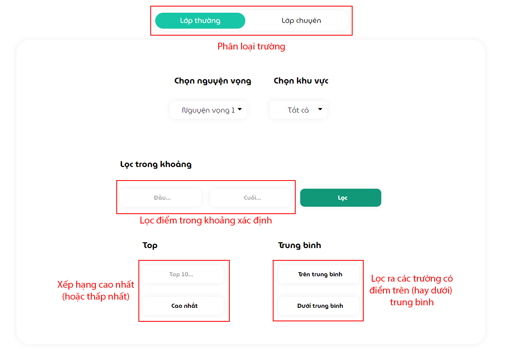
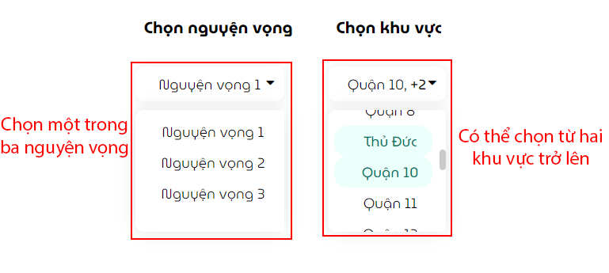
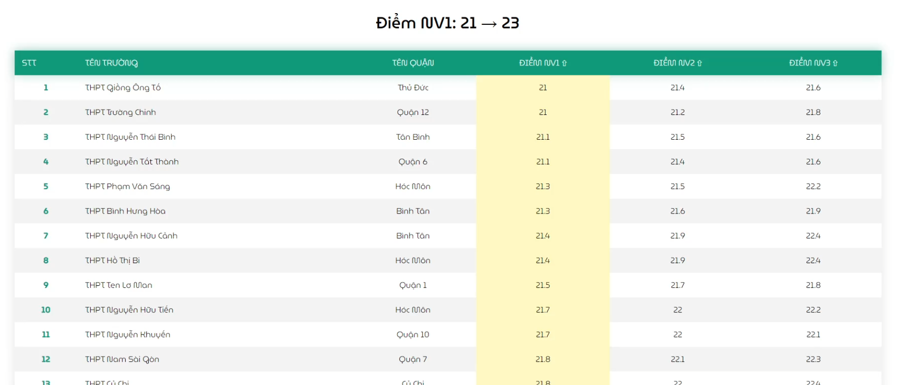
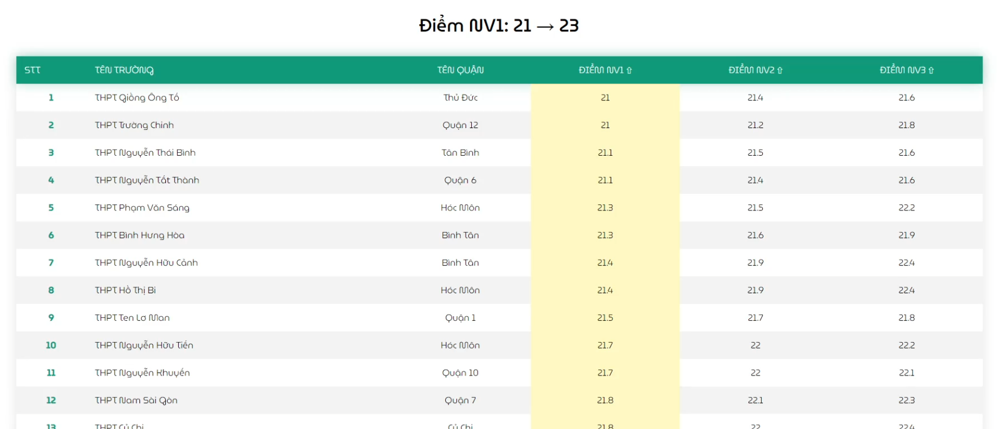
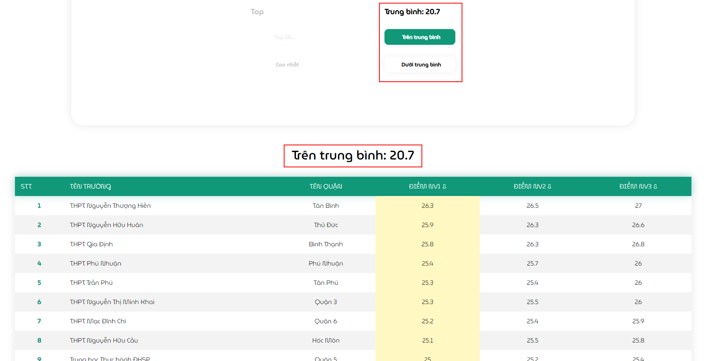
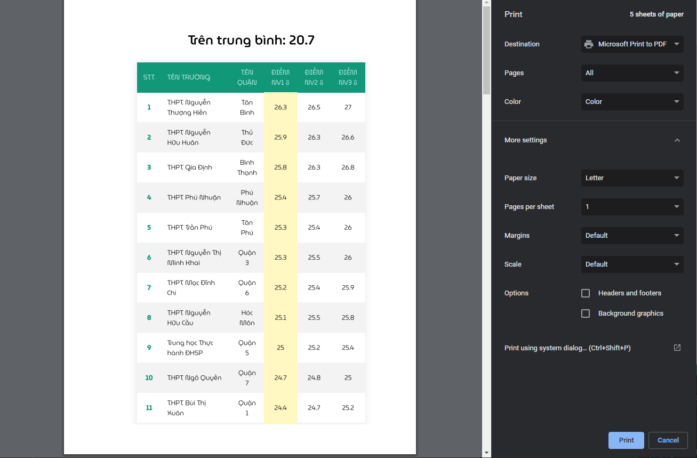

Đề xuất ¶
Để cho việc đưa ra lựa chọn được chi tiết và chính xác hơn, chúng tôi cung cấp bộ lọc với nhiều sự lựa chọn và so sánh nhiều hơn giữa các trường trong khu vực.
- Mô tả chức năng:
- Tại phần Lọc trong khoảng, người dùng được yêu cầu nhập điểm trong một khoảng nhất định (ví dụ từ 21 -> 23: đầu sẽ là 21, cuối sẽ là 23). Nếu điểm đầu nhỏ hơn điểm cuối, hệ thống sẽ yêu cầu nhập lại.
- Tại phần Top (xếp hạng), người dùng sẽ nhập số tự nhiên đại diện cho xếp hạng bao nhiêu trường có số điểm cao nhất (hoặc thấp nhất) ( ví dụ top 5 trường có điểm cao nhất, top 10 trường có điểm thấp nhất,... ).
- Tại phần Trung bình, hệ thống tự động tính điểm trung bình của toàn thành phố dựa trên nguyện vọng và khu vực đã được chọn ở trên. Người dùng chỉ cần lựa chọn hiển thị các trường với số điểm trên trung bình hoặc dưới trung bình so với toàn khu vực.
Tuỳ chọn bộ lọc ¶
- Tuỳ chọn nguyện vọng và khu vực để phân vùng phạm vi lọc điểm.
Lọc trong khoảng ¶
- Khi sử dụng một chức năng, 2 chức năng còn lại sẽ bị làm mờ đi (như hình bên dưới).
 

Lưu ý
- Khi điều kiện nhập không đúng, trang web sẽ thông báo nhập lại
Top ¶
Người dùng có thể chuyển từ Cao nhất sang Thấp nhất bằng việc ấn nút thêm một lần nữa (như hình).
- Hiển thị cao nhất:

- Hiển thị thấp nhất:

Trung bình ¶
- Hiển thị các trường với điểm cao hơn trung bình:
- Hiển thị các trường với điểm thấp hơn trung bình:

Xuất dữ liệu ¶
Trang Đề xuất có hỗ trợ chức năng in các bảng kết quả đã được người dùng tuỳ chỉnh phục vụ cho nhu cầu lưu trữ tài liệu.
Ghi chú
Nút in năm ở góc bên phải phía dưới màn hình. Nếu không nhìn thấy, hãy vuốt lên phía trên và nút sẽ tự hiển thị (mặc định nút sẽ ẩn khi kéo xuống để tránh che mất nội dung).

- Giao diện trước khi in:
- Giao diện ở chế độ đơn giản:

Người dùng có thể chọn lưu dưới dạng file pdf và tuỳ chỉnh định dạng theo nhu cầu ở phần xem trước khi in (phần bên phải ở hình trên).